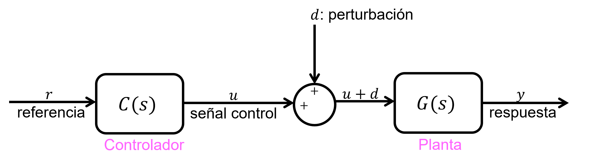
Reemplazar (2) en (1):
\[Y(s)=G(s)C(s)R(s)=L(s)R(s)\]
Donde \(L(s)=G(s)C(s)\) es el sistema abierto “open-loop system” en representación función de transferencia.
Si buscamos: \begin{align*} y(t)&=r(t) ~/\mathcal {L}\{\cdot \}\\ Y(s)&=R(s)\\ \Longrightarrow L(s)&=1\\ \Longrightarrow C(s)&=\frac {1}{G(s)} ~\text {``control inverso''} \end{align*}
Nota:
Nota: podría ser útil en RTHS, porque la respuesta es instantánea.
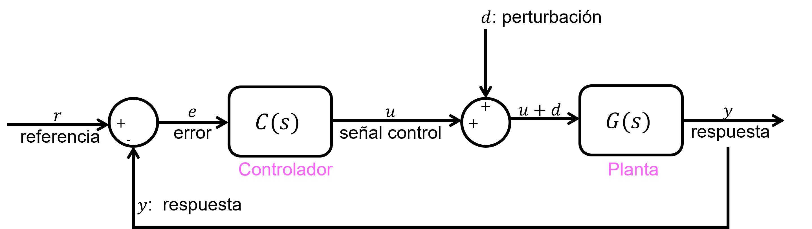
\begin{align*} \Longrightarrow & \text {Error: }~e(t)=r(t)-y(t)\\ & \text {Si }e(t)=0\longrightarrow y(t)=r(t) \end{align*}
Nota:
Cuando se añade un dispositivo de control al sistema dinámico estructural, se genera un nuevo sistema dinámico con propiedades distintas.
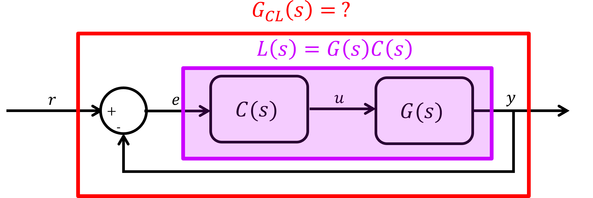
Desde el diagrama de bloques, se observa que: \begin{align*} Y(s) = G(s)U(s) \end{align*}
Pero, la señal de entrada \(U(s)\) es la señal de salida del controlador: \begin{align*} U(s) = C(s)E(s) \end{align*}
Reemplazando, se obtiene que : \begin{align*} Y(s) = G(s)C(s)E(s) \end{align*}
Notar que la función de transferencia para este subsistema es \(G(s)C(s)\). Siguiendo con el mísmo método reemplazando la señal de entrada por la multiplicación de su TF con su entrada (considerandola como salida): \begin{align*} Y(s)&=L(s)E(s)=G(s)C(s)E(s)\\ E(s)&=R(s)-Y(s) \end{align*}
Reemplzando (2) en (1): \begin{align*} \Longrightarrow Y(s)&=G(s)C(s)[R(s)-Y(s)]\\ \Longrightarrow [1+G(s)C(s)]Y(s)&=G(s)C(s)R(s)\\ \Longrightarrow Y(s)&= \bigg [\frac {G(s)C(s)}{1+G(s)C(s)}\bigg ]R(s)\\ \Longrightarrow Y(s)&= G_{CL}(s)R(s) \end{align*}
\(\therefore G_{CL} = \bigg [\frac {G(s)C(s)}{1+G(s)C(s)}\bigg ]\) es la función de transferencia del nuevo sistema que incorpora al controlador.
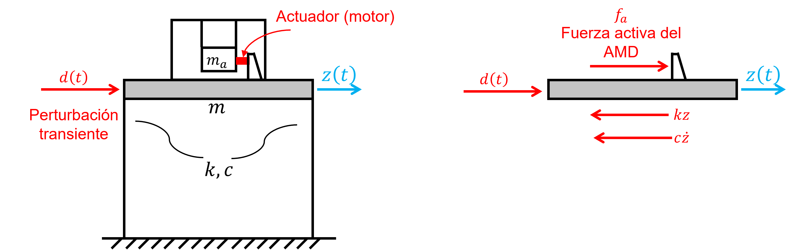
\begin{align*} \text {EDM: }~ m\ddot {z}+c\dot {z}+kz=f_a(u)+\cancelto {\text {Asuma=0}}{d} \end{align*}
\(u\): señal control (voltaje)
El objetivo es diseñar un algoritmo de control \(f_a(u,t)\) para mitigar \(z(t)\) y mejorar el desempeño.
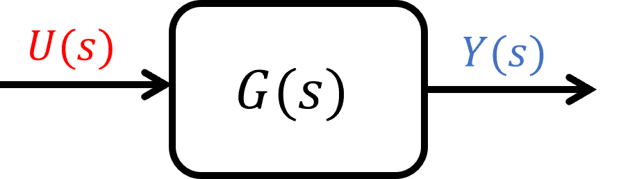
Respuesta Estado Estacionario: \(y_\infty =\lim _{t\to \infty } y(t)\)
Válido si y solo si \(G(s)\) es estable.
Teorema: Si todos los polos de \(G(s)\) se encuentran a la izquierda del plano complejo, entonces: \begin{align*} \lim _{t\to \infty } y(t)=\lim _{s\to 0} sY(s) \end{align*}
\(\Longrightarrow \) Generar un set de requisitos de respuesta de planta \(\Longrightarrow \) Especificaciones de respuesta transiente ante un escalón unitario
Ref: Franklin et al. (2015, Sec. 3.4)
Suponiendo un sistema LTI-SISO de segundo orden:
\begin{align*} \text {EDM: }~ m\ddot {u}+c\dot {u}+ku &= f\\ \Longrightarrow H_{UF}(s) &= \frac {1/m}{s^2+2\zeta \omega _n s+\omega _n^2} \end{align*}
Polos del sistema:
\begin{align*} s_{1,2} &= -\underbrace {\zeta \omega _n}_{\sigma } \pm j \underbrace {\omega _n \sqrt {1 - \zeta ^2}}_{\omega _d} \\ &= - \sigma \pm j \omega _d \end{align*}
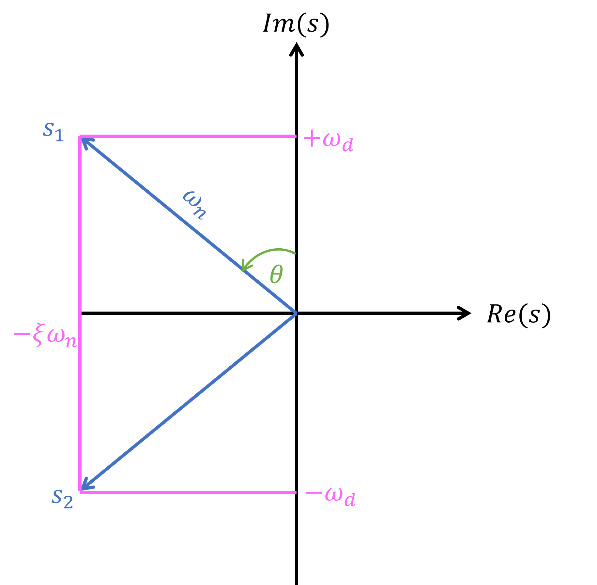
Fórmulas para estimar la respuesta transiente para el caso de excitación escalón:
Dadas las especificaciones transientes: \(t_r\), \(M_p\), \(t_s\) \begin{align*} \color {VioletRed}{t_s}&<(t_s)_{lim}=\frac {4}{(\zeta \omega _n)_{lim}}\\ \color {BurntOrange}{t_r}&<(t_r)_{lim}\approx \frac {1.6}{\omega _n}\\ \color {LimeGreen}{M_p}&<(M_p)_{lim}=e^{-\pi \tan (\theta )} \end{align*}
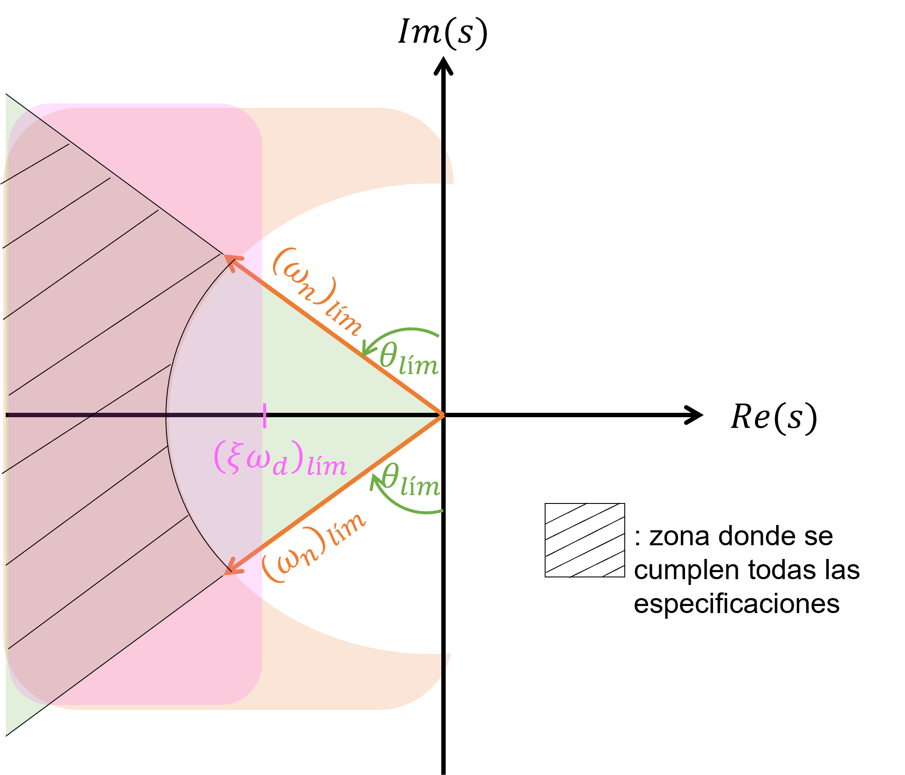
El control PID es un algoritmo de control para diseñar la señal de control \(u(t)\) para definir nuestra fuerza de control \(f_a(u,t)\) es el control PID. \begin{align*} u(t)&=K_pe(t)+K_D\frac {de(t)}{dt}+K_I\int e(t)dt\\ \Longleftrightarrow U(s) &= K_pE(s)+K_DsE(s)+K_I\frac {E(s)}{s} \\ \Longleftrightarrow U(s) &= \left (K_P + K_Ds + \frac {K_I}{s}\right )E(s) \end{align*}
Si definimos \(C(s) = K_P + K_Ds + \frac {K_I}{s}\) \begin{align*} U(s) = C(s)E(s) \end{align*}
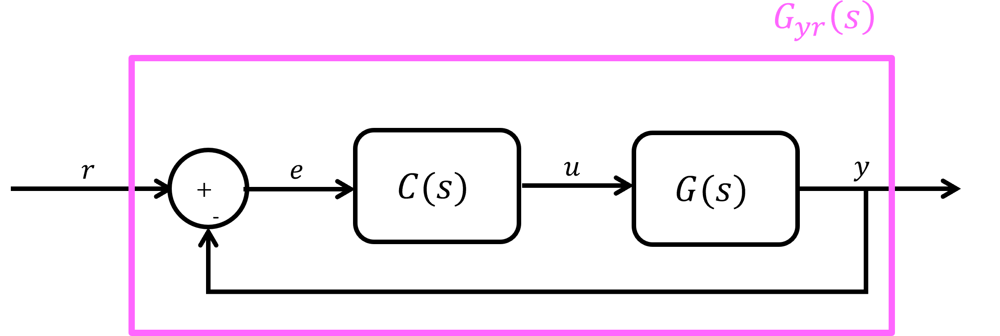
\(C(s)\) se diseña tal que \(e(t)\to 0\) \[C(s)=K_p+\frac {K_I}{s}+K_Ds\]
\begin{align*} Y(s)&=G(s)C(s)[R(s)-Y(s)]\\ \Longrightarrow Y(s)&=\frac {G(s)C(s)}{1+G(s)C(s)}R(s)\\ &=G_{CL}R(s)\\ &=G_{yr}R(s) \end{align*}
Si se considera únicamente el control P (proporcional), se puede obtener la función de transferencia del sistema cerrado. \begin{align*} & C(s)=K_p\\ \Longrightarrow & G(s)=\frac {1}{ms^2+cs+k}=\frac {1/m}{s^2+2\zeta \omega _n s+\omega _n^2}=\frac {c}{s^2+as+b}\\ \Longrightarrow & G_{CL}(s)=\frac {K_p\frac {c}{s^2+bs+c}}{1+K_p\frac {c}{s^2+bs+c}} \\ \Longrightarrow & G_{CL}(s)=\frac {K_p c}{s^2+as+(b+K_p\cdot c)} \longrightarrow \text {Función de transferencia Closed-loop} \end{align*}
Al tener la misma forma de un sistema 1GDL, se pueden definir propiedades equivalentes: \begin{align*} \Longrightarrow & \omega _{n,CL}= \sqrt {b+K_p\cdot c}\\ \Longrightarrow & \zeta _{CL}= \frac {a}{2\omega _{n,CL}}=\frac {a}{2\sqrt {b+K_p\cdot c}} \end{align*}
Notar que:
En términos de la respuesta \(y_{\infty }\): \begin{align*} y_{\infty }=\lim _{s\to 0}sY_{CL}(s)=\lim _{s\to 0} sG_{CL}(s)R(s) \end{align*}
Con \(R(s)\): escalón unitario
\begin{align*} \Longrightarrow y_{\infty }=\lim _{s\to 0} s\frac {K_p\cdot c}{s^2+as+(b+K_p\cdot c)}\cdot \frac {1}{s}=\frac {K_p\cdot c}{b+K_p \cdot c}\neq 1 \end{align*}
Valores pequeños de \(K_p\Longrightarrow \) error en estado estacionario
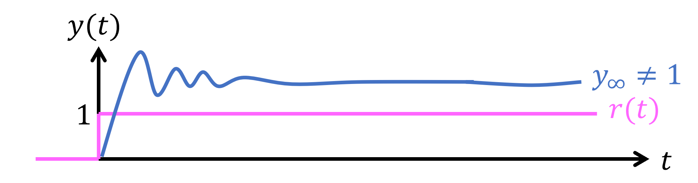
Análogamente al control P, se puede obtener la función de transferencia de un sistema estructural con control PD \begin{align*} G_{CL}(s)&=\frac {G(s)C(s)}{1+G(s)C(s)}=\frac {\left (\frac {c}{s^2+as+b}\right )C(s)}{1+\left (\frac {c}{s^2+as+b}\right )C(s)}\\ & = \frac {c\cdot C(s)}{a^2+as+\left ( b+c \cdot C(s) \right )} \end{align*}
Si el controlador es PD, entonces se obtiene la expresión para el sistema cerrado: \begin{align*} C(s) &= K_p+K_Ds=K_p(1+T_Ds)\\ \Longrightarrow G_{CL} &= \frac {cK_p(1+T_Ds)}{s^2+(a+cbK_pT_D)s+b(1+K_p)} \end{align*}
\(\Longrightarrow y_{\infty }\), no hay cambio en el error de estado estacionario
\(\Longrightarrow \) Con PD podemos ubicar los polos del sistema cerrado donde nosotros queramos
Advertencia: Control D amplifica el ruido eléctrico en la señal de respuesta \(\Longrightarrow \) Nunca utilizar control D.
\begin{align*} \Longrightarrow G_{CL}(s) &= \frac {c\cdot C(s)}{s^2+as+\left (b+c \cdot C(s)\right )}\\ \Longrightarrow C(s) &= K_p +\frac {K_I}{s}=K_P\left (1+\frac {T_I}{2}\right )\\ \Longrightarrow G_{CL} &= \frac {cK_p(s+T_I)}{s^3+as^2+(b+cK_p)s+cK_pT_I} \end{align*}
\begin{align*} \Longrightarrow y_{\infty }=\lim _{s\to 0}sY_{CL}(s)=\lim _{s\to 0} s\frac {K_p\cdot c(s+T_I)}{s^3+as^2+(b+cK_p)s+cK_pT_I}\cdot \frac {1}{s}=\frac {T_IK_p\cdot c}{T_IK_p\cdot c}= 1 \end{align*}
Nota: El esfuerzo del control I genera una reducción del error en estado estacionario.
\begin{align*} C(s) &= K_p+\frac {K_I}{s}+K_Ds\\ &= K_p\left (1+\frac {T_I}{s}+T_Ds\right ) \end{align*}
| \(K_p \uparrow \) | \(K_D \uparrow \) | \(K_I \uparrow \) | |
| error ss | \(\downarrow \) | - | 0 |
| \(t_r\) | \(\downarrow \) | - | ? |
| \(t_s\) | - | \(\downarrow \) | ? (\(\uparrow \)) |
| \(M_p\) | \(\uparrow \) | \(\downarrow \) | ? (\(\uparrow \)) |
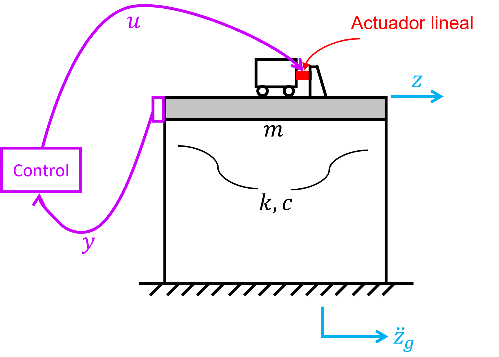
\begin{align*} \text {EDM: }~ m\ddot {z}+c\dot {z}+kz=-m\ddot {z}_g+gu \end{align*}
Propiedades de la estructura:
Representación espacio-estado: \begin{align*} {x}=\begin{bmatrix}{z}\\ {\dot {z}}\end{bmatrix}, \quad u_1 =\ddot {z}_g, \quad u_2=u \end{align*}
\begin{align*} {\dot {x}} &= \begin{bmatrix} 0 & 1\\ -k/m & -c/m \end{bmatrix}{x} + \begin{bmatrix} 0 \\ -1 \end{bmatrix}u_1+ \begin{bmatrix} 0 \\ g/m \end{bmatrix}u_2 \\ &= \begin{bmatrix} 0 & 1\\-k/m & -c/m \end{bmatrix}{x} + \begin{bmatrix} 0 & 0\\ -1 & g/m \end{bmatrix} \begin{bmatrix} \ddot {z}_g\\ u \end{bmatrix} \end{align*}
\begin{align*} {y}&=[z]\\ {y}&= \begin{bmatrix}1 & 0 \end{bmatrix}{x}+\begin{bmatrix}0 & 0 \end{bmatrix}\begin{bmatrix} \ddot {z}_g\\ u \end{bmatrix} \end{align*}
\begin{align} {u}=\begin{bmatrix} \ddot {z}_g\\ u \end{bmatrix}\longrightarrow \begin{array} {|r|r|} \hline A & B \\ \hline C & D \\ \hline \end{array} \longrightarrow {y}=[z] \quad \text {Sistema ``MISO''} \end{align}
Objetivo: Diseñar un control PID para mejorar el desempeño de la estructura sometida al terremoto de Northridge
1994.
Contol PID: \begin{align*} C(s)&=K_p\bigg (1+\frac {T_I}{s}+T_Ds\bigg )\\ &= K_p+\frac {K_I}{s}+K_Ds, \quad K_I=K_pT_I, \quad K_D=K_pT_D \end{align*}
Código Matlab:
1%% Parametros 2m=100; % masa primer piso, kg 3c=50; %Ns/m 4k=4000; %N/m 5g=100; %cte motor, N/V 6 7%% Control PID 8Kp=1; 9Ti=1/10; Ki=Kp*Ti; 10Td=1/100; Kd=Kp*Td; 11s=tf('s'); 12Cpid=Kp*(1+Ti/s+Td*s); 13 14%% Espacio estado 15A=[0 1;-k/m -c/m]; 16B1=[0;-1]; 17B2=[0;g/m]; 18B=[B1 B2]; 19C=[1 0]; 20D1=0; 21D2=0; 22D=[D1 D2]; 23sys=ss(A,B,C,D); 24sysyu=ss(A,B2,C,D2); 25Gyu=tf(sysyu); 26 27%% Sistema Cerrado 28Gcl=Gyu*Cpid/(1+Gyu*Cpid); 29Gcl=minreal(Gcl) % Cancelacion polos y ceros 30 31figure; 32rlocus(Gcl) 33 34%% Simulacion 35Tfinal=60; %s 36Fs=1000; %Hz 37Ts=1/Fs; %s 38 39GM=importdata('RegistroNorthridge1994.txt'); 40N=length(GM.data); 41dt=0.02; %s 42t=linspace(0,N*dt,N); 43ddzg=[t.' GM.data/100]; %[s m/s2] 44 45sim('AMDctrl_demo_simu')
Simulink:
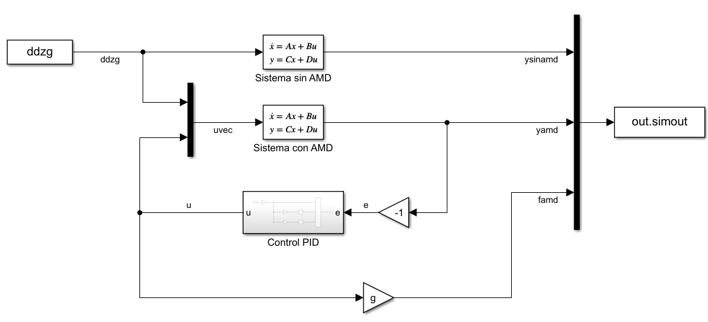
\(\Longrightarrow \) “Migración de polos”, Locus = posición en latín \begin{align*} \text {Planta: }~ G_{y\ddot {z}_g}(s)&=\frac {1/m}{s^2+2\zeta \omega _n s+\omega _n^2}\\ G_{yu}(s) &=\frac {g/m}{s^2+2\zeta \omega _n s+\omega _n^2} \end{align*}
\begin{align*} \text {Controlador PID: }~C(s)=K_p(1+\frac {T_I}{s}+T_Ds) \end{align*}
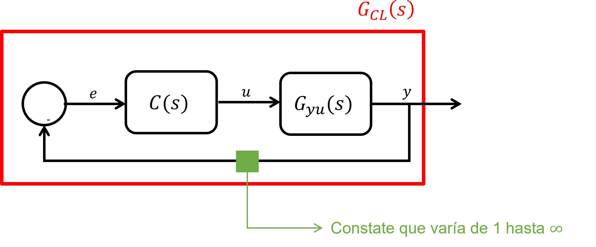
\begin{align*} G_{CL}(s)&=\frac {G(s)C(s)}{1+G(s)C(s)}\\ G_{CL}(s)&=\frac {G(s)K_p\bigg (1+T_I/s+T_Ds\bigg )}{1+G(s)K_p\bigg (1+T_I/s+T_Ds\bigg )} \end{align*}
Resumen control PID:
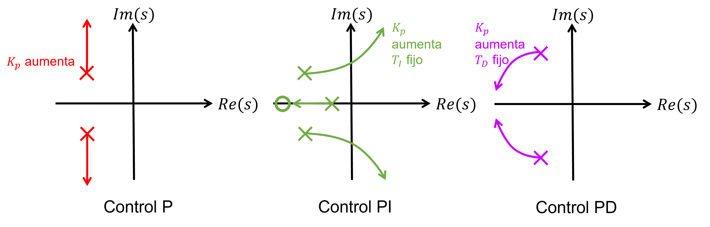
Representación espacio estado, sistema LTI.
Sea: \begin{align*} {x}&=[x_1,x_2,...,x_N]^\top \\ {u}&=[u_1,u_2,...,u_p]^\top \\ {y}&=[y_1,y_2,...,y_r]^\top \end{align*}
Paréntesis: Aplicando la Transformada de Laplace a las ecuaciones de estado y respuesta de la representación espacio-estado: \begin{align*} {\dot {x}}={A}{x}+{B}{u}\xrightarrow []{\mathcal {L}}s{X}(s)={A}{X}(s)+{B}{U}(s)\\ \Longrightarrow {X}(s)=(s{I}-{A})^{-1}{B}{U}(s)\\ G_{xu}(s)=(s{I}-{A})^{-1}{B} \end{align*}
\begin{align*} {y}={C}{x}+{D}{u}\xrightarrow []{\mathcal {L}}s{Y}(s)={C}{X}(s)+{D}{U}(s)\\ {Y}(s)=[{C}(s{I}-{A})^{-1}{B}+{D}]{U}(s)\\ G_{yu}={C}(s{I}-{A})^{-1}{B}+{D} \end{align*}
Asumir que \({D}={0}\) (no hay componente “feedthrough” en la salida del sistema). \begin{align*} {A_c}=\left [ \begin{array}{cccc|c} -a_1 & -a_2 & \dots & -a_{n-1} & -a_n\\ \hline 1 & & & 0 & 0\\ & 1 & & & \vdots \\ & & \ddots & & \\ 0 & & & 1 & 0 \end{array}\right ], \quad {A_c}\in \mathbb {R}^{n\times n} \end{align*}
\begin{align*} {B_c}=\left [ \begin{array}{c} 1 \\ \hline 0\\ \vdots \\ 0 \end{array}\right ], \quad {B_c}\in \mathbb {R}^{n\times 1} \end{align*}
\begin{align*} {C_c}=\left [ \begin{array}{cccc} b_1 & b_2 & \dots & b_n \end{array}\right ], \quad {C_c}\in \mathbb {R}^{1\times n} \end{align*}
\begin{align*} \text {Realización (SISO): }\quad \left \{ \begin{array}{l} {\dot {x}_c}={A_c}{x_c}+{B_c}u \\ y={C_c}{x_c} \\ \end{array} \right . \end{align*}
Notar que: \begin{align*} \dot {x}_1 &= -a_1x_1-a_2x_2 ... -a_nx_n+1\cdot u\\ \dot {x}_2 &= x_1\\ \dot {x}_3 &= x_2\\ \vdots \\ \dot {x}_n &= x_{n-1} \end{align*}
Utilizando la transformada de Laplace, se obtiene la siguiente función de transferencia: \begin{align*} G_{yu}(s)=\frac {b_1s^{n-1}+b_2s^{n-2}+...+b-n}{s^n+a_1s^{n-1}+a_2s^{n-2}+...+a_n} = \frac {\text {numerador orden n-1}}{\text {denominador orden n}} = \text {TF Propia} \end{align*}
Se utiliza para diseñar controladores cuando todos los estados del sistema son conocidos.
Sea \(G(s)=\frac {c_1}{s+p_1}+\frac {c_2}{s+p_2}+...+\frac {c_n}{s+p_n}\), \(G(s)\) se escribe como una expansión de fracción parcial, y los polos \(p_i\) son todos distintos: \begin{align*} {A_m}=\left [ \begin{array}{cccc} -p_1& & & 0\\ & -p_2 & & \\ & & \ddots & \\ 0 & & & -p_n \end{array}\right ], \quad {A_m}\in \mathbb {R}^{n\times n} \end{align*}
\begin{align*} {B_m}=\left [ \begin{array}{c} 1 \\ 1\\ \vdots \\ 1 \end{array}\right ], \quad {B_m}\in \mathbb {R}^{n\times 1} \end{align*}
\begin{align*} {C_m}=\left [ \begin{array}{cccc} c_1 & c_2 & \dots & c_n \end{array}\right ], \quad {C_m}\in \mathbb {R}^{1\times n} \end{align*}
\begin{align*} \text {Realización (SISO): }\quad \left \{ \begin{array}{l} {\dot {x}_m}={A_m}{x_m}+{B_m}\cancelto {0}{u} \end{array} \right . \end{align*}
\begin{align*} \dot {x}_{m_1} &= \lambda _1x_{m_1}\\ \dot {x}_{m_2} &= \lambda _2x_{m_1}\\ \vdots \\ \dot {x}_{m_n} &= \lambda _nx_{m_n} \end{align*}
\begin{align*} \Longrightarrow {\dot {x}}={A}{x} \end{align*}
Resolver: \({A}{v}=\lambda {v}\) (Problema de valores propios de \(A\)).
\(T\) es la matriz de transformación modal, \({T}=[{v_1},{v_2},...,{v_n}]\)
Dado \(G(s)=\frac {n(s)}{d(s)}\), con \(a_i\), \(b_i\) conocidos.
\begin{align*} {A_o}=\left [ \begin{array}{c|cccc} -a_{n-1} & 1 & & & 0 \\ -a_{n-2} & & 1 & & \\ \vdots & & & \ddots & \\ -a_1 & 0 & & & 1 \\ \hline -a_0 & 0 & 0 & \dots & 0 \end{array}\right ], \quad {A_o}\in \mathbb {R}^{n\times n} \end{align*}
\begin{align*} {B_o}=\left [ \begin{array}{c} b_{n-1} \\ b_{n-2}\\ \vdots \\ b_1 \\ \hline b_0 \end{array}\right ], \quad {B_o}\in \mathbb {R}^{n\times 1} \end{align*}
\begin{align*} {C_o}=\left [ \begin{array}{c|ccc} 1 & 0 & \dots & 0 \end{array}\right ], \quad {C}_o\in \mathbb {R}^{1\times n} \end{align*}
Se utiliza para diseñar “observadores”.
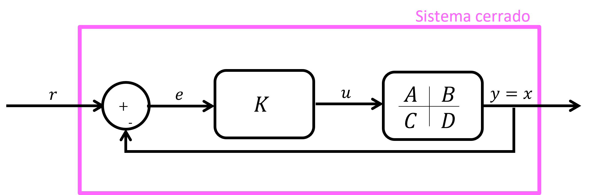
Objetivo: Diseñar \(K\) tal que \(e=r-x\to 0\) para un tiempo \(t_f\).
Definición: El sistema de control “full state feedback” tiene relación con el hecho que el controlador cuenta con
acceso a todos los estados del sistema.
Veamos la ecuación de estado del sistema: \begin{align*} \dot {x}=Ax+Bu \end{align*}
La señal de control: \begin{align*} u=Ke \end{align*}
La señal de error: \begin{align*} e=r-x \end{align*}
Luego:
\begin{align*} \dot {x} &= Ax+BK(r-x)\\ \dot {x} &= (A-BK)x+BKr\\ \end{align*}
\begin{align*} \dot {x}=A_{CL}x+B_{CL}r \end{align*}
Para que el sistema cerrado sea ESTABLE, los valores propios de \(A_{CL}\) deben tener partes reales estrictamente negativas:
\begin{align*} \Re (\text {eig}(A_{CL}))<0 \end{align*}
Analicemos el diseño de un controlador utilizando una representación CCF:
\begin{align*} {A}=\left [ \begin{array}{cccc|c} -a_1 & -a_2 & \dots & -a_{n-1} & -a_n\\ \hline 1 & & & 0 & 0\\ & 1 & & & \vdots \\ & & \ddots & & \\ 0 & & & 1 & 0 \end{array}\right ]_{n\times n} \end{align*}
\begin{align*} {B}=\left [ \begin{array}{c} 1 \\ \hline 0\\ \vdots \\ 0 \end{array}\right ]_{n\times 1} \end{align*}
\begin{align*} {K}=\left [ \begin{array}{ccccc} k_{n-1} & k_{n-2} & \dots & k_1 & k_0 \end{array}\right ]_{1\times n} \end{align*}
Calculemos \(BK\): \begin{align*} {BK}=\left [ \begin{array}{cccc|c} k_{n-1} & k_{n-2} & \dots & k_1 & k_0\\ \hline & & & & 0\\ & & {0}_{(n-1)\times (n-1)} & & \vdots \\ & & & & 0 \end{array}\right ]_{n\times n} \end{align*}
Ahora, calculemos \(A_{CL}=A-BK\) \begin{align*} {BK}=\left [ \begin{array}{cccc|c} -(a_{n-1}+k_{n-1}) & -(a_{n-2}+k_{n-2}) & \dots & -(a_1+k_1) & -(a_0+k_0)\\ \hline & & & & 0\\ & & {I}_{(n-1)\times (n-1)} & & \vdots \\ & & & & 0 \end{array}\right ]_{n\times n} \end{align*}
Queremos encontrar los valores propios de \(A_{CL}\). Escribamos la ecuación característica de \(A_{CL}\) \begin{align*} \det ({A_{CL}}-\lambda {I})=0 \end{align*}
\begin{align*} {BK}=\left [ \begin{array}{cccc|c} -(\lambda +a_{n-1}+k_{n-1}) & -(a_{n-2}+k_{n-2}) & \dots & -(a_1+k_1) & -(a_0+k_0)\\ \hline 1 & -\lambda & & & 0\\ & 1 & -\lambda & & \vdots \\ & & \ddots & \ddots & 0\\ & & & 1 & -\lambda \\ \end{array}\right ]=0 \end{align*}
La ecuación característica resulta ser: \begin{align*} \lambda ^n+(a_{n-1}+k_{n-1})\lambda ^{n-1}+(a_{n-2}+k_{n-2})\lambda ^{n-2}+...+(a_{1}+k_{1})\lambda +(a_{0}+k_{0})=0 \end{align*}
Si queremos ubicar los polos en una posición particular, o sea, queremos fijar los polos de la siguiente manera: \[ \lambda =\{p_1,p_2,p_3,..,p_n \}\]
Podemos reescribir la ecuación característica de la siguiente forma: \[(\lambda -p_1)(\lambda -p_2)(\lambda -p_3)...(\lambda -p_n)=0 \]
Desarrollando el polinomio: \[\Longrightarrow \lambda ^n+\alpha _{n-1}\lambda ^{n-1}+...+\alpha _1\lambda +\alpha _0=0 \] Entonces, el controlador \(K\) se define como: \begin{align*} \alpha _{n-1} = a_{n-1}+k_{n-1} &\Longrightarrow k_{n-1} = \alpha _{n-1}-a_{n-1}\\ \alpha _{n-2} = a_{n-2}+k_{n-2} &\Longrightarrow k_{n-2} = \alpha _{n-2}-a_{n-2}\\ \vdots \\ \alpha _0 = a_0+k_0 &\Longrightarrow k_0 = \alpha _0-a_0\\ \end{align*}
Donde \(\alpha _i\) se obtiene de la posición deseada de los polos.
Entonces, si el sistema es CCF, podemos diseñar \(K\) al elegir la posición de los polos de manera apropiada \(\Longrightarrow \) POLE
PLACEMENT
Nota: Si el sistema no es CCF, entonces se puede transformar a CCF utilizando matriz de transformación \(T\),
provisto que el sistema sea controlable.
Sea la realización:
\begin{align*} {x}=Ax+Bu \xrightarrow []{x=Tz} \dot {z}=A_cz+B_cu \end{align*}
Sea \(T \in \mathbb {R}^{n\times n}\), tal que \(T^{-1}\) existe \begin{align*} \Longrightarrow x&=Tz\\ \Longrightarrow \dot {x}&=T\dot {z} \end{align*}
Reemplazando: \begin{align*} T\dot {z} &= ATz+Bu\\ \Longrightarrow \dot {z}&=T^{-1}ATz+T^{-1}Bu\\ \dot {z} &= A_cz+B_cu \end{align*}
“Pole placement”, pasos a seguir:
\begin{align*} \Longrightarrow \dot {z} &= (A_c-B_cK_c)z\\ \Longrightarrow T\dot {z} &= TA_cz+TB_cz\\ \Longrightarrow \dot {x} &= TT^{-1}ATz-TT^{-1}BK_cz\\ \Longrightarrow \dot {x} &= Ax-BK_cT^{-1}x\\ \Longrightarrow \dot {x} &= (A-BK)x \end{align*}
donde \(K=K_cT^{-1}\), controlador para el sistema original.
Motivación:
Considere el siguiente ejemplo de sistema dinámico: \begin{align*} \dot {x} &= f(x,u)\\ y &= g(x,u) \end{align*}
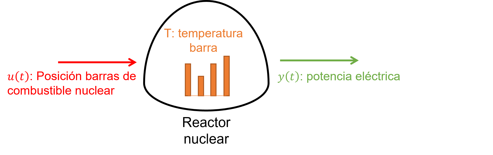
¿Es posible determinar los estados internos del sistema \(x(t)\) (temperatura de las barras), utilizando solo las señales de
entrada y salida \(\{u(t), y(t)\}\)? La respuesta es sí, pero con la condición de que el sistema sea observable.
El objetivo de lo que se desarrollará a continuación es diseñar un observador/estimador para poder estimar los estados internos \(x(t)\) de un sistema, de tal forma que dependa únicamente de las señales de entrada y salida del sistema:
\begin{align*} \hat {x}(t) = f(u(t), y(t)) \end{align*}
Notación:
La dinámica del sistema de los estados estimados \(\hat {x}\) es la misma que la del sistema planta:
\begin{align*} &\dot {\hat {x}} = A\hat {x}+Bu \\ &\hat {x}(0) = \hat {x}_0 \end{align*}
Luego, se puede deducir la dinámica del error de estimación \(\tilde {x}\):
\begin{align*} \dot {\tilde {x}} &= \frac {d}{dt}(x-\hat {x})=\dot {x}-\dot {\hat {x}}\\ &= (Ax+Bu)-(A\hat {x}+Bu)=A(x-\hat {x}) \\ \Longrightarrow \dot {\tilde {x}} &= A\tilde {x} \end{align*}
La estrategia para diseñar el observador es la siguiente: Si los estados decaen a cero, entonces se diseña un estimador tal que el error de la estimación decae con la misma tasa que el sistema.
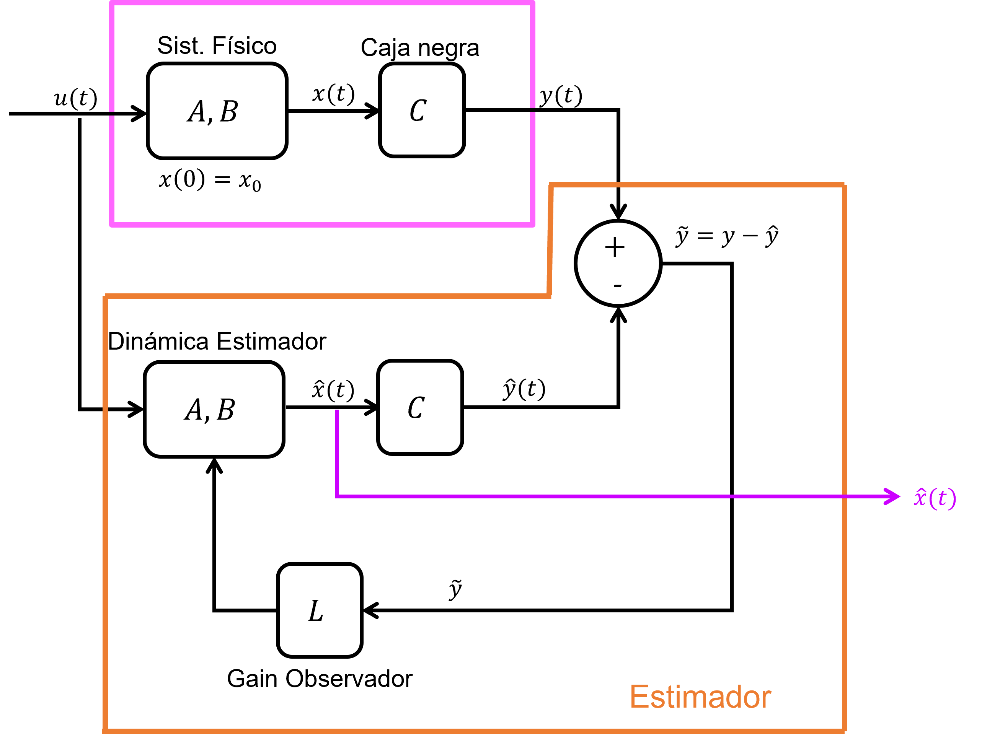
De la figura anterior, notar que para estimar los estados del sistema, se requiere de una ganancia \(L\). Lo que se va a
realizar a continuación es diseñar esta matriz \(L\).
La representación espacio-estado de los estados estimados \(\hat {x}(t)\) incluye la señal del error de estimación \(\tilde {x}\) y su ganancia \(L\).
\begin{align*} \dot {\hat {x}}(t) = A\hat {x}(t)+Bu(t)+L\tilde {y}(t) \end{align*}
donde: \begin{align*} L=\left [ \begin{array}{c} l_1 \\ l_2\\ \vdots \\ l_n \end{array}\right ], \quad L \in \mathbb {R}^{n\times r}, \quad x,y \in \mathbb {R}^n \end{align*}
La ecuación de estado del error de estimación queda de la siguiente forma: \begin{align*} \dot {\tilde {x}}=\dot {x}-\dot {\hat {x}} &= (Ax+Bu)-(A\hat {x}+Bu+L\tilde {y})\\ &= A\tilde {x}-L(y-\hat {y})\\ &= A\tilde {x}-L(Cx-C\hat {x})\\ &= A\tilde {x}-LC\tilde {x}\\ \dot {\tilde {x}} &= (A-LC)\tilde {x} \end{align*}
Por lo tanto, para diseñar \(L\), \((A-LC)\) debe cumplir con estabilidad. Para lograr esta estabilidad, se ubicarán apropiadamente
los polos de forma que se encuentren al lado izquierdo del plano complejo. A esta estrategia se le conoce como Pole
Placement.
Caso particular:
Considere el siguiente sistema con \(x\in \mathbb {R}^n\), \(u\in \mathbb {R}\), \(y\in \mathbb {R}\):
\begin{align*} G(s) = \frac {b_0}{s^n+a_{n-1}s^{n-1}+...+a_1s+a_0} \end{align*}
Su Forma Canónica Observable es:
\begin{align*} {A_o}=\left [ \begin{array}{c|cccc} -a_{n-1} & 1 & & & 0 \\ -a_{n-2} & & 1 & & \\ \vdots & & & \ddots & \\ -a_1 & 0 & & & 1 \\ \hline -a_0 & 0 & 0 & \dots & 0 \end{array}\right ], \quad {A_o}\in \mathbb {R}^{n\times n} \end{align*}
\begin{align*} {B_o}=\left [ \begin{array}{c} b_{n-1} \\ b_{n-2}\\ \vdots \\ b_1 \\ \hline b_0 \end{array}\right ], \quad {B_o}\in \mathbb {R}^{n\times 1} \end{align*}
\begin{align*} {C_o}=\left [ \begin{array}{c|ccc} 1 & 0 & \dots & 0 \end{array}\right ], \quad {C}_o\in \mathbb {R}^{1\times n} \end{align*}
Como en este caso particular, \(y\in \mathbb {R}\), entonces \(L\) es matriz \(n \times 1\): \begin{align*} L=\left [ \begin{array}{c} l_{n-1} \\ l_{n-2}\\ \vdots \\ l_0 \end{array}\right ] \end{align*}
Por lo tanto, se puede obtener \(A_0 - LC_0\) de la siguiente forma: \begin{align*} LC_o&=\left [ \begin{array}{c} l_{n-1} \\ l_{n-2}\\ \vdots \\ l_0 \end{array}\right ] \left [ \begin{array}{c c c c} 1 & 0 & ... & 0 \end{array}\right ] =\left [ \begin{array}{c|c} l_{n-1} & \\ \vdots & {0} \\ l_0 & \end{array}\right ] \\ A_o-LC_o &= \left [ \begin{array}{c|c c c} -a_{n-1}-l_{n-1} & & & \\ -a_{n-2}-l_{n-2} & & & \\ \vdots & & {I} & \\-a_1-l_1 & & & \\ \hline \\ -a_0-l_0 & 0 & ... & 0 \end{array}\right ] \end{align*}
y su ecuación característica es: \begin{align*} &\phantom {\Longrightarrow } \Delta (A_o-LC_o) = 0 \\ &\Longrightarrow s^n+(a_{n-1}+l_{n-1})s^{n-1}+...+(a_1+l_1)s+(a_0+l_0) = 0 \end{align*}
Cada coeficiente \((a_i+l_i)\), son los coeficientes \(\lambda _i\) del polinomio característico asociado a la ubicación de polos deseada \(p_i\):
\begin{align*} \prod _{i=0}^{n-1}(s-p_i)=s^n+\lambda _{n-1}s^{n-1}+...+\lambda _1s+\lambda _0=0 \end{align*}
Para finalmente obtener los términos \(l_i\) de la matriz \(L\), se deben definir los polos deseados, expandir el polinomio y luego igualar ambos términos para todo \(i \in [0,n-1]\).
\begin{align*} &\phantom {\longrightarrow } a_i + l_i = \lambda _i \\ &\longrightarrow l_i = a_i-\lambda _i \end{align*}
Nota: En MATLAB, el diseño por ubicación de polos se puede realizar utilizando el comando place().
Nota: Si el sistema no está escrito en OCF (forma canónica observable), es recomendable transformarlo a OCF con una transformación de similitud utilizando la matriz \(T\). Recordar que esta matriz \(T\) existe ssi el sistema es observable.
Considere el siguiente sistema LTI cerrado:
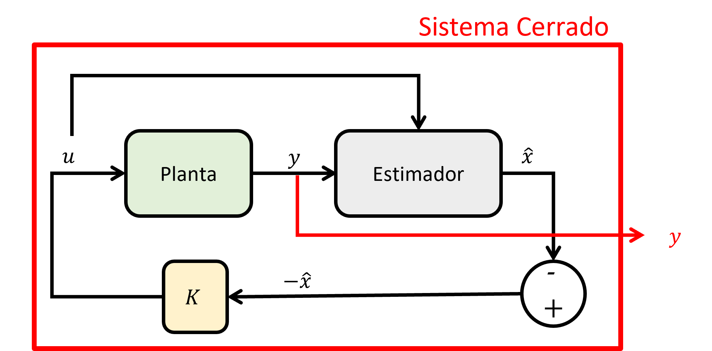
Planta:
Controlador:
Estimador y error de estimación:
Utilizando las ecuaciones de cada subsistema, vamos a obtener una expresión para el sistema cerrado:
Reemplazando (2.3c) en (2.2a): \begin{align*} u&=-K(x-\tilde {x})\\ \end{align*}
Reemplazando lo anterior en (2.1a): \begin{align*} \dot {x} &= Ax + B(-K(x - \tilde {x}))\\ \Longrightarrow \dot {x} &= Ax - BK(x-\tilde {x}) \\ \Longrightarrow \dot {x} &= (A-BK)x+BK\tilde {x} \end{align*}
Restando (2.1a) menos (2.3a) para obtener la dinámica del error de estimación \begin{align*} \Longrightarrow \dot {\tilde {x}} &= (Ax+Bu)-(A\hat {x}+Bu+L\tilde {y})\\ \Longrightarrow \dot {\tilde {x}} &= A\tilde {x}-LC \tilde {x}\\ \Longrightarrow \dot {\tilde {x}} &= (A-LC)\tilde {x} \end{align*}
Luego, definiendo los estados del sistema cerrado como \(z=\left [ \begin{array}{c} x \\ \tilde {x} \end{array}\right ]\)
La ecuación de estado del sistema cerrado queda de la siguiente forma: \begin{align*} \dot {z}=\left [ \begin{array}{c} \dot {x} \\ \dot {\tilde {x}} \end{array}\right ] = \left [ \begin{array}{cc} A-BK & BK \\ 0 & A-LC \end{array}\right ]\left [ \begin{array}{c} x \\ \tilde {x} \end{array}\right ] \end{align*}
Para simplificar notación, la matriz de estado del sistema cerrado se denotará como \(A_{CL}\) \begin{align*} A_{CL} &= \left [ \begin{array}{cc} A-BK & BK \\ 0 & A-LC \end{array}\right ]\\ \Longrightarrow \dot {z}&=A_{CL}z \end{align*}
Finalmente, los polos de \(A_{CL}\) se obtienen al resolver la ecuación característica: \begin{align*} \text {det}(sI-A_{CL})&=0\\ \Longrightarrow \text {det}(sI-(A-BK))\cdot \text {det}(sI-(A-LC)) &=0 \end{align*}
Este resultado se conoce como Principio de Separación.
Con este principio, se puede diseñar \(K\) y \(L\) por separado, luego agrupar y construir el sistema de control cerrado.